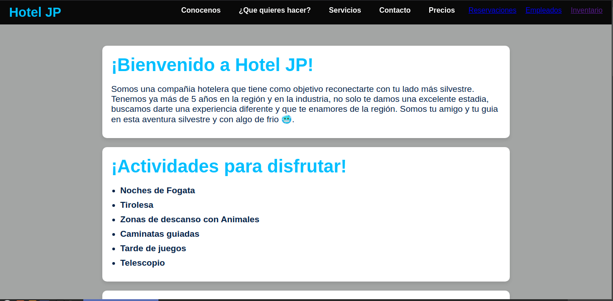

Proyectos.

Hotel-JP
Junto Con Talento Tech se hace el desarrollo de una Landing page para hotel jp, empresa hotelera en villeta cundinamarca, dando una solución a su reconocimiento como empresa dentro de la región y atrayendo turistas que llegan a la región.
Git Hub
Inventario
Junto con la pagina web de hotel JP, se desarrolla de manera conjunta un CRUD donde se trata el einventario del hotel, permitiendo aplicar los conceptos de CRUD. Permitiendo una mejor gestion empresarial de los insumos y recursos.
Git Hub